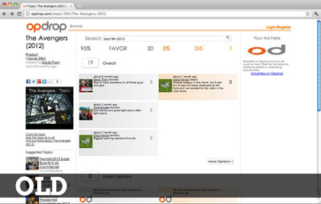
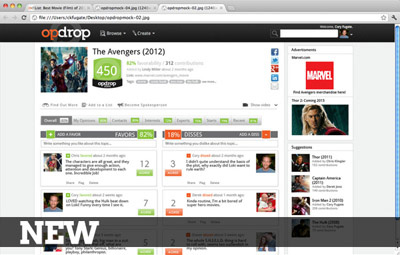
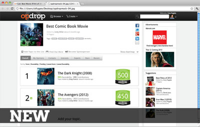
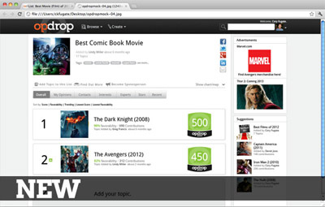
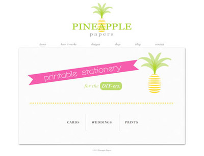
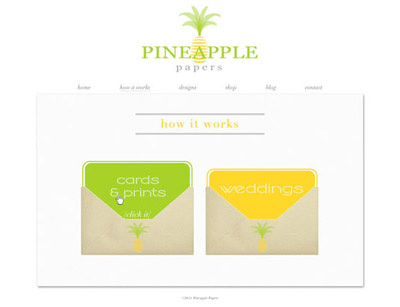

Web Design
Opdrop Redesign
As part of the founding team for a startup web application called Opdrop, my primary responsibility is the redesign of the UX. The site is currently being built out using a PHP and MySQL backend and javascript in the front end. I'll post a link here as we release it for beta testing.
 

Watts Properties
This website was designed for a manager of apartment complexes in Chico, California as a class assignment. I worked on a team of three, and my main focus was to design and create the layout. It uses PHP and a MySQL database for storing and retrieving the property information.
[Visit the Watts Properties website.]
Pineapple Papers
Pineapple Papers was built for a friend who is starting a DIY card & stationery business. She designed the site in Adobe Illustrator, and then I built it out based on her mocks. I added CSS3 animations into the link buttons on the shop, blog, and how-it-works pages.
